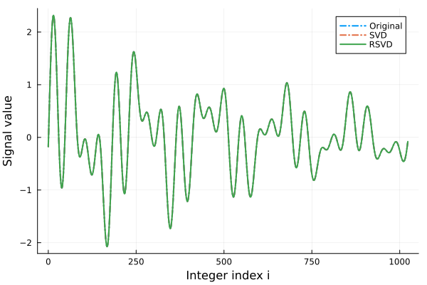
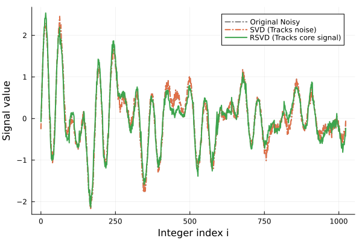

Signal Encoding and Compression
This tutorial focuses on building an intuition for how classical signals map onto Matrix Product States (MPS) and how to interact with the compressed data.
We will use n to denote the number of qubits (or sites), giving us a total signal length of N = 2^n.
using QILaplace, ITensors1. Defining a Structured Signal
Let's start by generating a simple, smooth signal. Structured signals like sine waves or smooth decays have low "entanglement" across our n qubits. This mathematical property is exactly what allows us to compress them so efficiently!
We will use a small signal with n=4 qubits (16 elements total).
n = 4
N = 2^n
dt_struct = 1 / N
x_structured = generate_signal(
n,
kind=:sin,
dt=dt_struct,
freq=[2π, 6π],
phase=[0.2, -0.4],
)16-element Vector{Float64}:
-0.1907490115135893
1.2605272231070337
1.7601409795355494
0.9887917666210433
0.059005583838356745
0.11718557170551103
0.9284594163678446
1.1914820619096866
0.19074901151358986
-1.260527223107033
-1.7601409795355503
-0.9887917666210435
-0.059005583838356856
-0.11718557170551058
-0.9284594163678468
-1.1914820619096873Now, we compress this signal into an MPS. The signal_mps function returns a SignalMPS that contains the amplitude of the original signal. This is necessary because when we binary-encode the signal onto a wavefunction, we store the normalized signal. However, in order to retrieve the original signal, we need to multiply the coefficient by the amplitude (the norm). The SignalMPS does this by storing amplitude as an internal field separately, and multiplies the normalised MPS cores with the amplitude when we retrieve the coefficients of the SignalMPS.
psi = signal_mps(x_structured; method=:svd, cutoff=1e-14)SignalMPS with 4 sites:
Site 1: dim=2, tags="site-1" | dim=1, tags="bond-1"
Site 2: dim=1, tags="bond-1" | dim=2, tags="site-2" | dim=2, tags="bond-2"
Site 3: dim=2, tags="bond-2" | dim=2, tags="site-3" | dim=2, tags="bond-3"
Site 4: dim=2, tags="bond-3" | dim=2, tags="site-4"
2. Accessing the Compressed Elements
Now that our signal is compressed, how do we read it?
The elements of our original signal array map directly to the coefficients of the MPS basis states. We can access these values from a few different intuitive perspectives.
Let's say we want to look at the 10th element of our original signal. In Julia's 1-based indexing, this is x_structured[10].
As a 0-based integer, this corresponds to index 9. In binary, 9 is 1001.
target_idx = 9
binary_state = [1, 0, 0, 1]4-element Vector{Int64}:
1
0
0
1Here is how we can extract that exact value from our MPS psi:
Method A: Integer Indexing. We can ask for the coefficient directly using the integer index.
val_int = coefficient(psi, target_idx);Method B: Binary Array Indexing. We can pass the bit array representing the specific basis state.
val_bin = coefficient(psi, binary_state);Method C: Direct Array-Like Access. For a more native feel, we can index the MPS directly using the bit states.
val_direct = psi[1, 0, 0, 1];Let's verify that all these methods return the exact same physical value as our original uncompressed array:
println("Original signal value: ", x_structured[target_idx+1])
println("Integer access: ", val_int)
println("Binary array access: ", val_bin)
println("Direct state access: ", val_direct)
Original signal value: -1.260527223107033
Integer access: -1.2605272231070332
Binary array access: -1.2605272231070332
Direct state access: -1.2605272231070332
3. Compression Strategies: SVD vs. RSVD
To compress our signal into an MPS, we need a way to truncate the tensor network. This package provides two primary methods, and choosing between them depends heavily on the nature of your signal.
Singular Value Decomposition (SVD) is the gold standard for fidelity. Because it computes the full singular spectrum, it provides a strict theoretical error guarantee upon truncation. However, this precision comes with a catch: if your signal contains random noise, SVD will faithfully try to capture that noise. In the language of tensor networks, noise looks like high entanglement, which drastically inflates your bond dimensions.
Randomized SVD (RSVD) takes a more pragmatic approach. Instead of computing the entire singular spectrum, it uses randomized algorithms to capture only the first k singular values. By skipping the full computation, it safely ignores much of the "noisy" spectrum, compressing the data into an MPS much faster.
(For more comparison on these tensor decompositions, check out the Core Concepts).
The general rule of thumb:
- Use SVD when your data is small, or when you need predictable, guaranteed accuracy on clean data.
- Use RSVD when your data is huge, or when dealing with noisy signals where full spectrum calculation is wasteful.
Let's define a couple of helper functions and test both methods on a larger, structured signal with n=10 qubits (1024 elements).
max_bond_dim(psi) = isempty(psi.bonds) ? 1 : maximum(dim.(psi.bonds))
relative_l2(x_hat, x_ref) = norm(x_hat - x_ref) / max(norm(x_ref), eps(Float64))relative_l2 (generic function with 1 method)Generate a decaying multi-frequency signal
n_struct = 10
N_struct = 2^n_struct
dt_struct_big = 1 / N_struct
x_structured = generate_signal(
n_struct,
kind=:sin_decay,
dt=dt_struct_big,
freq=[2π * 5, 2π * 17, 2π * 23],
decay_rate=[1.25, 1.4, 1.55],
phase=[0.0, 0.4, -0.6],
)
cutoff = 1e-9
maxdim = 96;Compress using exact SVD
t_svd = @elapsed psi_svd = signal_mps(
x_structured; method=:svd, cutoff=cutoff, maxdim=maxdim
);Compress using Randomized SVD (targeting the top k=10 singular values)
t_rsvd = @elapsed psi_rsvd = signal_mps(
x_structured; method=:rsvd, cutoff=cutoff, maxdim=maxdim, k=10
);4. Evaluating the Structured Signal
Let's reconstruct both compressed states back into standard arrays and compare their performance. Because our signal is highly structured (smooth sine waves and decays), we expect both methods to perform exceptionally well.
x_struct_svd = [coefficient(psi_svd, i) for i in 0:(N_struct-1)]
x_struct_rsvd = [coefficient(psi_rsvd, i) for i in 0:(N_struct-1)]
println("SVD Performance:")
println(" Time: ", round(t_svd, digits=4), " seconds")
println(" Max Bond: ", max_bond_dim(psi_svd))
println(" Rel Error: ", round(relative_l2(x_struct_svd, x_structured), sigdigits=3))
println("\nRSVD Performance:")
println(" Time: ", round(t_rsvd, digits=4), " seconds")
println(" Max Bond: ", max_bond_dim(psi_rsvd))
println(" Rel Error: ", round(relative_l2(x_struct_rsvd, x_structured), sigdigits=3))SVD Performance:
Time: 23.2171 seconds
Max Bond: 6
Rel Error: 3.63e-5
RSVD Performance:
Time: 7.2717 seconds
Max Bond: 6
Rel Error: 2.54e-5
Both algorithms captured the structure perfectly, but let's visualize the reconstruction to be sure.
GKS: cannot open display - headless operation mode active

Figure 1: Both SVD and RSVD accurately track the original structured signal.
5. The Noisy Signal Experiment
Now we reach the critical difference between these two methods. Real-world signals are rarely perfectly smooth; they contain noise.
Let's add 10% Gaussian noise to our structured signal.
When we ask SVD to compress this, it will faithfully try to capture every single random fluctuation. Because noise lacks underlying structure, the "entanglement" of the state skyrockets, causing the bond dimensions to blow up rapidly to satisfy our strict cutoff tolerance.
RSVD, on the other hand, is given a strict budget (maxdim=10 and k=10). It cannot perfectly recreate the noise. Instead, it captures the dominant features (the underlying sine waves and decays) and essentially discards the rest. While its mathematical error compared to the raw noisy signal will be higher, it successfully extracts the meaningful data without exploding the bond dimension!
import Random.Xoshiro, Random.randn
import Statistics.std
rng = Xoshiro(2026)
noise_sigma = 0.1 * std(x_structured)
x_noisy = x_structured .+ noise_sigma .* randn(rng, length(x_structured));We run SVD with ONLY our strict error cutoff. It will do whatever it takes to hit that accuracy.
t_svd_noisy = @elapsed psi_svd_noisy = signal_mps(
x_noisy; method=:svd, cutoff=cutoff
);We run RSVD with a strict bond dimension limit.
t_rsvd_noisy = @elapsed psi_rsvd_noisy = signal_mps(
x_noisy; method=:rsvd, cutoff=cutoff, maxdim=10, k=10
);Let's reconstruct the signals and compare the metrics:
N_struct = length(x_noisy)
x_noisy_svd = [coefficient(psi_svd_noisy, i) for i in 0:(N_struct-1)]
x_noisy_rsvd = [coefficient(psi_rsvd_noisy, i) for i in 0:(N_struct-1)]
err_noisy_svd = relative_l2(x_noisy_svd, x_noisy)
err_noisy_rsvd = relative_l2(x_noisy_rsvd, x_noisy)
bond_noisy_svd = max_bond_dim(psi_svd_noisy)
bond_noisy_rsvd = max_bond_dim(psi_rsvd_noisy)
println("Noisy SVD Performance:")
println(" Time: ", round(t_svd_noisy, digits=4), " seconds")
println(" Max Bond: ", bond_noisy_svd, " (Massive blow-up!)")
println(" Rel Error: ", round(err_noisy_svd, sigdigits=3))
println("\nNoisy RSVD Performance:")
println(" Time: ", round(t_rsvd_noisy, digits=4), " seconds")
println(" Max Bond: ", bond_noisy_rsvd, " (Constrained)")
println(" Rel Error: ", round(err_noisy_rsvd, sigdigits=3), " (Higher, but acceptable)")Noisy SVD Performance:
Time: 0.3615 seconds
Max Bond: 31 (Massive blow-up!)
Rel Error: 2.14e-5
Noisy RSVD Performance:
Time: 0.0027 seconds
Max Bond: 10 (Constrained)
Rel Error: 0.204 (Higher, but acceptable)
Even though RSVD has a higher absolute error relative to the noisy input, a visual inspection reveals something fantastic: it effectively smoothed out the noise and retained the core physical signal!

Figure 2: SVD tries to fit the noise, resulting in a messy reconstruction. RSVD captures the underlying structure, effectively filtering out the noise.
To see how these methods perform in terms of runtime and memory on larger signals, check out the Benchmarking Runs page!
This page was generated using Literate.jl.